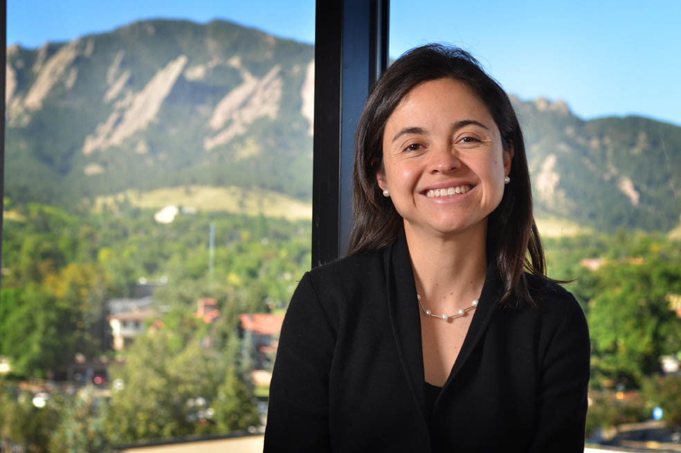
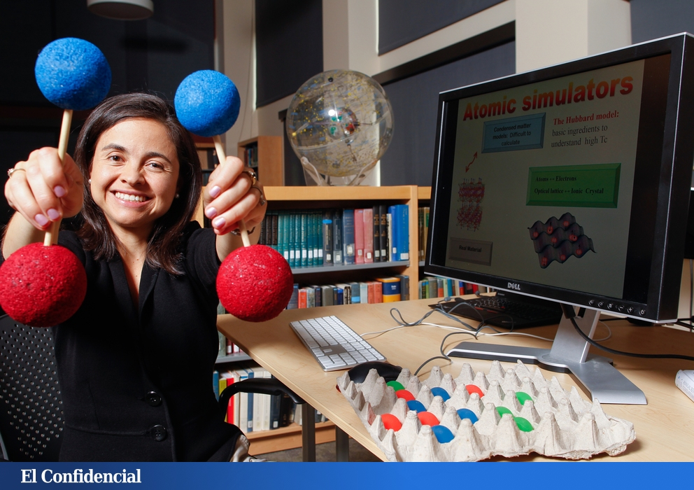
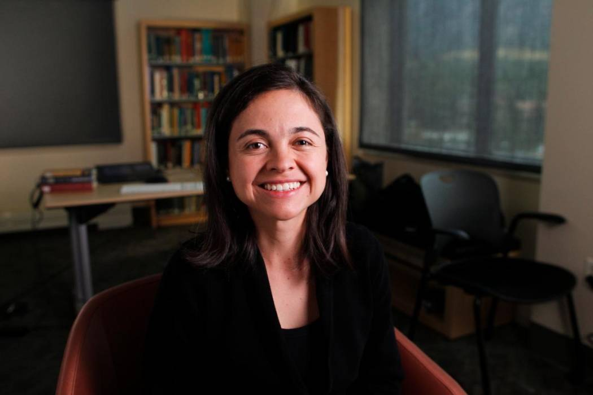

Nació en 1977 en Bogotá, Colombia. Desde joven mostró una pasión extraordinaria por los números y la física.
Estudió en la Universidad de los Andes y luego obtuvo su doctorado en EE. UU. Es una de las físicas teóricas más destacadas del mundo.
Su campo de trabajo es la mecánica cuántica, específicamente sistemas ultrafríos y relojes atómicos.
Sus investigaciones ayudan a mejorar la precisión de los relojes cuánticos, esenciales para GPS, comunicaciones avanzadas y nuevas tecnologías.
En 2013 recibió el prestigioso Premio MacArthur “Genius”, otorgado solo a personas con creatividad excepcional.
También ha trabajado con el Instituto Nacional de Estándares y Tecnología (NIST). Sus aportes impulsan tecnologías cuánticas de próxima generación.
Es mentora de mujeres científicas. Su liderazgo ha sido reconocido mundialmente. Representa el poder de la ciencia latinoamericana.
Es una referente internacional en física moderna.